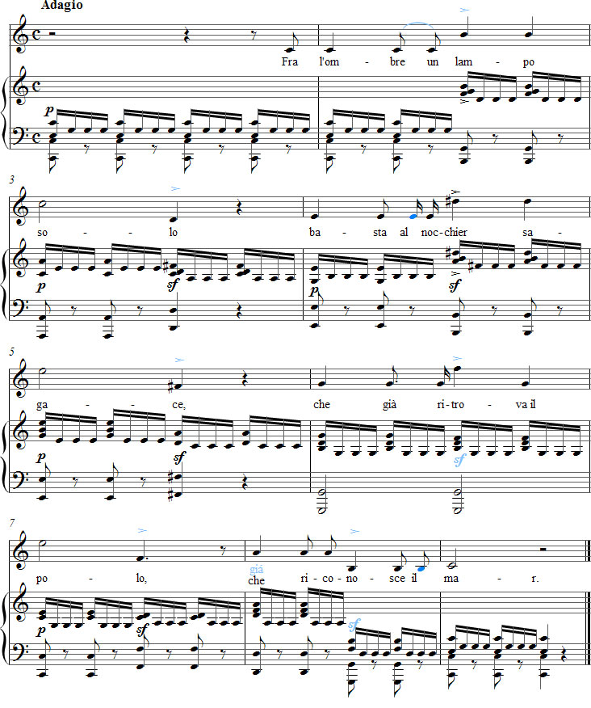

Vaccaj – Exercise 4a
Listen to the recording
Sheet music

Exercise 4a
Intervalli di settima
Seventh intervals
in a single flash of lightning,
the course and recognizes
the sea again.
Performance instructions
In this exercise on sevenths, Vaccaj makes an elegant choice by using a text describing lightning over a dark sea. If the student initially has difficulty finding the correct interval, it can be filled in with thirds, fourths and notes of the scale. However, the character of the lightning is only captured when the seventh is sung directly. The pianist's task is to depict the dark, rolling waves.
As in the accented version of Lascia il lido, this exercise also provides an opportunity to practise the contrast between legato and non legato.
The poem Fra l'ombre is the first example of seven-syllable verse in Metodo pratico. Vaccaj takes account of the varying stress on the first and second syllables by placing the word Fra on an upbeat, unlike the word basta. The placement of the stress on che, however, is not entirely successful.
It has been wondered whether Vaccaj deliberately makes a mistake by changing the word già to che in the final phrase. The intention might have been to give a teacher who understands the text an opportunity to impress the student by correcting the mistake. The only publishers who have had access to the textual source—and could therefore demonstrate their knowledge in their editions—are Tecner and Paton.
Practice suggestions
It is useful to work on this evocative text in the speaking voice. Preferably, recite it with an eerie legato, with or without accompaniment. You can try transferring the accents shown in the score into the spoken text.
If you sing the sevenths an octave lower in the first three phrases, the tension of the intervals will feel stronger.
Before strongly accenting the third beats in bars 2, 4 and 6, sing the melody sempre legato e piano. Male voices can also accent the third beats in bars 3, 5, 7 and 8, but for reasons of vocal health, most female singers would probably do best to accent only the last of these. Stylish portamento is also an excellent alternative to accents in bars 3, 5 and 7.
The accented notes do not necessarily have to sound beautiful. For contrast, the unaccented notes should be piano.
The tempo should be slow enough for the pianist's right-hand sixteenth notes to sound growling rather than energetic. If this causes breathing difficulties for the singer, breaths can be taken, at least initially, after the following words: l'ombre, basta (in which case al receives its own sixteenth note), già and riconosce (il receives its own sixteenth note).
Ideas for interpretation
If the word che is used, it should not be stressed (not even in bar 6). The problem of accentuation could be avoided in the penultimate bar by placing che on an upbeat, as with Fra.
Try to phrase the music so that the lines of the poem clearly form a single sentence.
Preferably, sustain the final note long enough for the vast expanse of the sea to be “heard”.
Forshufvud, G. 1994. Con lieve fiato. Lärarhandledning till Nicola Vaccajs Metodo pratico. Göteborgs universitetet.